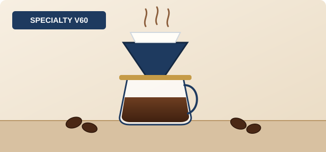

Осіння карта спешелті-кави 2026
У новому сезоні команда кав’ярні «Зерно» оновила зернову лінійку, зосередившись на лотах світлого обсмаження з Ефіопії, Колумбії та Кенії. Кожна партія проходить обов’язковий капінг перед тим, як потрапити у кавомолку.
Альтернативні методи заварювання дають змогу розкрити тонкі квіткові, ягідні та цитрусові відтінки без додавання сиропів. Наші бариста підбирають помел і температуру води індивідуально під кожен сорт зерна.

Популярні методи заварювання
Гості можуть обрати класичні напої на основі еспресо або один із ручних способів приготування фільтр-кави:
- Пуровер V60 — чистий, прозорий напій із виразною фруктовою кислотністю;
- Аеропрес — щільне тіло й насичений аромат завдяки короткому часу екстракції;
- Кемекс — м’який та збалансований смак для двох або трьох гостей;
- Колд-брю — холодне настоювання протягом 14 годин із нотами темного шоколаду.
Порада від шеф-бариста
Для першого знайомства зі світлим обсмаженням рекомендуємо скуштувати ефіопський лот митої обробки у форматі V60 та дати напою охолонути 2–3 хвилини — саме тоді найповніше відкривається його ягідний букет.